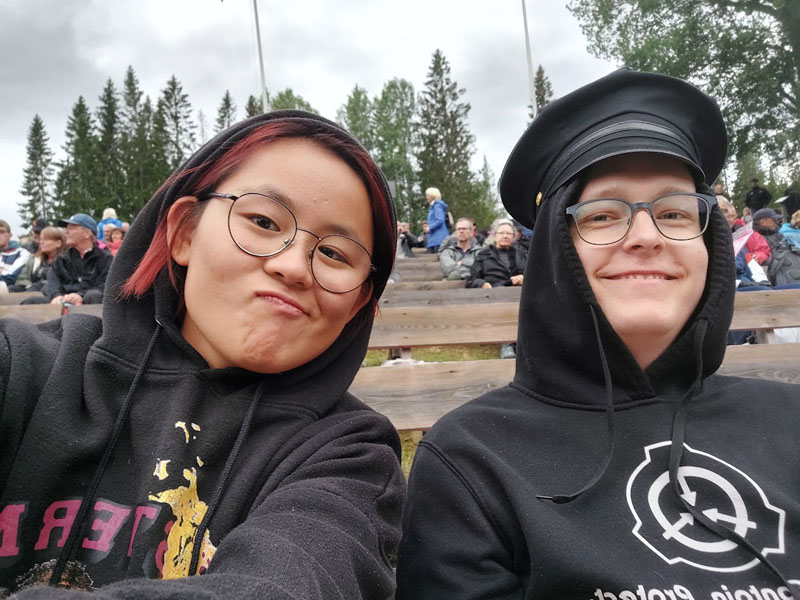

Jag och Isa Wänman på Diggiloo
Det absolut tråkigaste jag gjort i sommar var att behöva hjälpa mamma på grudn av hennes muskelnedbrytande sjukdom men jag har också gjort en rolig grej och det var att spelleda DnD 5e för mina vänner.
Jag har badat i havet flera gånger och det kändes skönt (det var väldigt varmt).
Det godaste jag åt i somras var en basilika-parmesan sås jag smakade på ett bröllop i sommras och jag skulle vilja jämför smaken med ätbarheter. En tv-serie som jag upptäckte i somras var Kill La Kill och den skulle jag vilja rekommendera till alla som gillar action-komedier och som inte har något mot lättkläda huvudkaraktärer.
En person som jag träffade i somras var Lucas och jag skulle vilja citera hen genom att säga:"Mitt arcane focus är en [REDACTED]"
Vid ett tillfälle i somras åkte jag till Diggiloo med en vän där var det både bra musik och blött (regn).
Jag skulle vilja sammanfatta min sommar med tre ord: sol, spel, smärtor.
En helt okej sommar men nog har jag allt längtat efter att jag ska få börja skolan igen och jag tror att detta år på NTI kommer att bli stressigt med gymnasiearbetet.